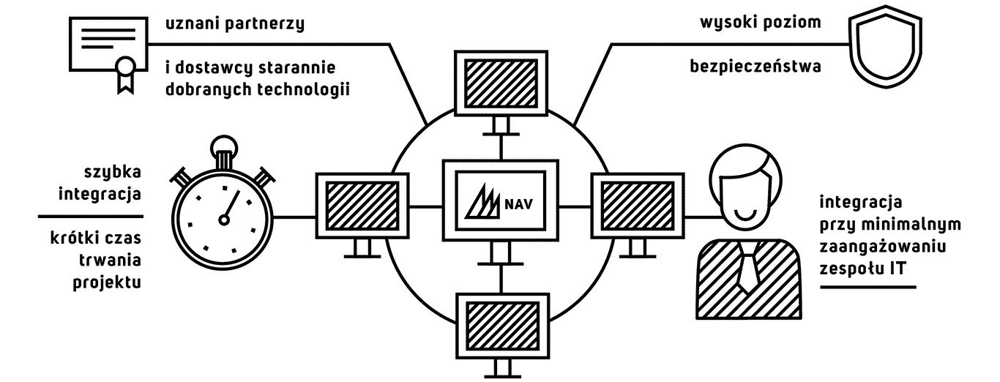

Na potrzeby szybkiej integracji z rozwiązaniami Microsoft zbudowaliśmy skrypty i predefiniowany mapping, dzięki czemu projekty trwają krótko, a zarządzanie zintegrowanym i spójnym środowiskiem wymiany danych nie wymaga wysiłku.
Projekty przebiegają szybko przy minimalnym zaangażowaniu zespołu IT klienta.
